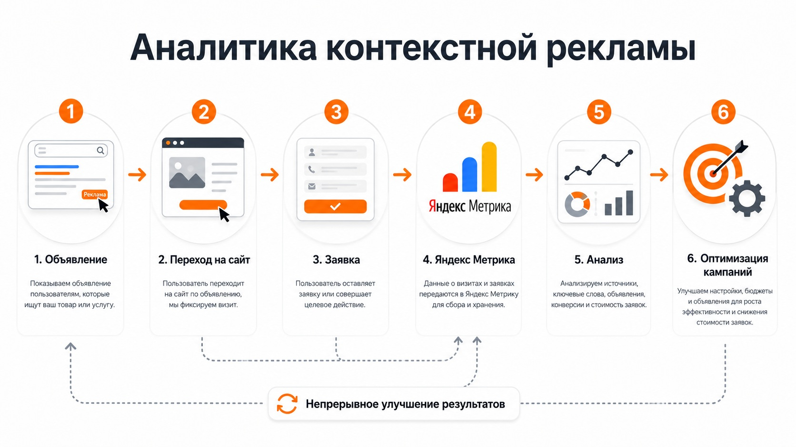

Блог о платном трафике
Контекстная реклама под ключ
Контекстная реклама под ключ - это полный цикл работы с рекламой: от анализа бизнеса и подготовки сайта до настройки кампаний, запуска, аналитики и дальнейшей оптимизации.
В моей работе речь в первую очередь о Яндекс Директе. Я не ограничиваюсь созданием объявлений и подбором ключевых фраз. До запуска смотрю сам продукт, предложение, посадочную страницу, аналитику и экономику проекта. После запуска работа продолжается: нужно анализировать реальные обращения, отключать неэффективные связки и перераспределять бюджет в пользу тех, которые дают результат.
Если вам нужна настройка и дальнейшее ведение рекламы одним специалистом, это и есть формат работы под ключ.
Что значит реклама под ключ
Есть разница между разовой настройкой Яндекс Директа и полноценной работой под ключ.
При разовой настройке специалист собирает рекламные кампании, настраивает аналитику и запускает показы. Дальше клиент самостоятельно следит за результатами.
Работа под ключ включает не только первоначальную настройку, но и дальнейшее управление рекламой. После запуска начинается этап, который обычно сильнее всего влияет на итоговый результат: накопление статистики, обучение стратегий, анализ поисковых запросов и площадок, корректировка кампаний, работа с объявлениями и посадочной страницей.
Поэтому я рассматриваю Директ как постоянно управляемый рекламный канал, а не как настройку, которую достаточно сделать один раз.
Что входит в контекстную рекламу под ключ
Состав работ зависит от проекта, но обычно процесс выглядит так:
| Этап | Что делаю |
|---|---|
| Анализ | Изучаю продукт, целевую аудиторию, конкурентов, спрос и текущую рекламу |
| Посадочная страница | Проверяю сайт, первый экран, оффер, формы и точки потери пользователей |
| Аналитика | Настраиваю или проверяю Яндекс Метрику и необходимые цели |
| Подготовка рекламы | Формирую структуру кампаний, аудитории, ключевые фразы и исключения |
| Объявления | Подготавливаю тексты, изображения и другие материалы |
| Запуск | Настраиваю стратегии, географию, расписание, бюджет и места показа |
| Ведение | Анализирую трафик, обращения, расходы и работу алгоритмов |
| Оптимизация | Отключаю слабые связки, тестирую новые и перераспределяю бюджет |
| Отчетность | Показываю основные показатели и изменения по проекту |
Это базовая схема. Интернет-магазину, B2B-компании, локальной услуге или образовательному проекту могут потребоваться разные типы кампаний и разная аналитика.
Анализ проекта перед запуском
Настройка рекламы начинается не в интерфейсе Яндекс Директа.
Сначала нужно понять, что именно мы собираемся рекламировать и насколько проект вообще готов принимать платный трафик.
Я смотрю:
- какие товары или услуги являются приоритетными;
- кто принимает решение о покупке;
- какой спрос уже существует;
- что предлагают конкуренты;
- куда будет попадать человек после клика;
- насколько понятен оффер;
- удобно ли оставить заявку;
- какие действия на сайте нужно отслеживать;
- какие результаты предыдущей рекламы уже есть.
Иногда проблема находится не в рекламном кабинете. Если страница плохо объясняет предложение или форма заявки неудобна, увеличение рекламного бюджета ситуацию не исправит.
Настройка Яндекс Директа
После анализа собирается структура рекламных кампаний.
В современном Яндекс Директе для performance-задач используется в том числе Единая перфоманс-кампания. В ней можно управлять местами показа, стратегиями, аудиториями и объявлениями. Директ позволяет работать с Поиском, Рекламной сетью Яндекса, Картами и другими доступными размещениями.
Нет универсальной структуры, которую можно одинаково применять ко всем проектам.
Для одного бизнеса основной объем качественных обращений может приходить с поиска. Для другого дополнительно нужны РСЯ, ретаргетинг, товарные объявления или отдельные кампании по разным сегментам аудитории.
Я выбираю структуру исходя из задачи проекта, а не из количества кампаний в кабинете.
Настройка аналитики и целей
Без нормальной аналитики нельзя понять, какие расходы действительно приводят к результату.
До запуска я проверяю Яндекс Метрику и настраиваю необходимые цели. Это могут быть:
- отправка формы;
- заказ;
- звонок;
- переход в мессенджер;
- прохождение определенного этапа воронки;
- другое значимое для бизнеса действие.
Количество кликов само по себе мало говорит об эффективности рекламы. Яндекс также рекомендует при оценке performance-рекламы смотреть дальше посещений сайта и учитывать, становятся ли привлеченные пользователи клиентами и какой результат они приносят бизнесу.
Если проект позволяет передавать данные о реальных продажах, квалифицированных лидах или других более глубоких конверсиях, это полезнее простой оптимизации по любому заполнению формы.
Запуск и первые данные
После подготовки запускаются рекламные кампании и начинается сбор статистики.
На этом этапе не стоит делать выводы только по первым нескольким кликам. Смотрю на данные в комплексе:
- расход;
- количество и стоимость обращений;
- качество лидов;
- конверсию сайта;
- поисковые запросы;
- площадки;
- аудитории;
- объявления;
- работу выбранной стратегии.
CTR, цена клика и объем показов тоже нужны, но чаще используются как диагностические показатели. Для бизнеса основным результатом обычно остаются обращения, продажи и их стоимость.
Статья о цене клика в Яндекс Директе

Что происходит после запуска
Под ключ означает, что работа не заканчивается после прохождения модерации.
По мере накопления данных я:
- убираю нецелевые поисковые запросы;
- блокирую некачественные площадки;
- анализирую стоимость и качество обращений;
- перераспределяю бюджет;
- корректирую структуру кампаний;
- тестирую новые аудитории и объявления;
- слежу за расходом;
- проверяю работу аналитики;
- ищу причины просадок;
- масштабирую связки, которые показывают хороший результат.
Смысл ведения не в постоянном изменении настроек ради самого процесса. Если кампания работает стабильно, вмешиваться в нее каждый день не требуется. Изменения должны опираться на данные.
Сколько стоит контекстная реклама под ключ
Стоимость моей работы начинается от 30 000 ₽ в месяц. Рекламный бюджет оплачивается отдельно и расходуется непосредственно на показы и переходы в Яндекс Директе.
Итоговая стоимость ведения зависит в первую очередь от объема рекламного бюджета и масштаба проекта.
Отдельно нужно учитывать сам рекламный бюджет. Его нельзя определить только по названию услуги или количеству кампаний. Стоимость трафика зависит от ниши, региона, конкуренции, объема спроса и других факторов.
Перед стартом имеет смысл определить тестовый бюджет, запустить рекламу и уже по реальным данным оценивать экономику привлечения клиентов.
Кому подходит такой формат
Работа под ключ подходит, если бизнесу нужен специалист, который сам занимается рекламой от подготовки до дальнейшей оптимизации.
Особенно логичен такой формат, когда:
- нет отдельного директолога внутри компании;
- нужно запустить новый рекламный канал;
- существующая реклама работает, но ее результатами никто системно не занимается;
- требуется связать Директ с Метрикой и бизнес-показателями;
- нужно масштабировать уже работающие кампании;
- собственнику или маркетологу не хочется постоянно контролировать рекламный кабинет самостоятельно.
При этом реклама не решает любую задачу автоматически. Если у продукта нет конкурентного предложения, сайт не вызывает доверия или экономика не позволяет покупать трафик по рыночной стоимости, одной настройкой Директа это не исправить.
Почему я веду проекты лично
Я работаю как частный специалист и веду рекламные проекты самостоятельно. Между клиентом и человеком, который непосредственно принимает решения в рекламном кабинете, нет аккаунт-менеджера или цепочки исполнителей.
Это упрощает коммуникацию: вопросы по рекламе, аналитике, сайту и результатам обсуждаются напрямую со мной.
При необходимости я также смотрю посадочную страницу и саму воронку. Иногда изменение формы, оффера или структуры страницы влияет на стоимость заявки сильнее, чем очередная корректировка рекламной кампании.
Я занимаюсь интернет-рекламой более 10 лет и работаю официально как ИП.
Примеры работ
До выбора подрядчика лучше смотреть не только на обещания, но и на реальные проекты.
На сайте собраны кейсы по B2B, недвижимости, образованию, интернет-магазинам и другим направлениям. В них можно посмотреть задачи проектов, используемые рекламные инструменты и фактические результаты.
Как начинается работа
Сначала я знакомлюсь с проектом и исходными данными.
Мне нужно понять:
- Что вы продаете.
- В каких регионах работаете.
- Какая посадочная страница будет использоваться.
- Запускалась ли реклама раньше.
- Какие обращения или продажи считаются целевыми.
- Какой рекламный бюджет планируется.
После этого можно определить структуру запуска и понять, какие инструменты действительно нужны.
Контекстную рекламу под ключ лучше строить не вокруг количества объявлений или ключевых слов, а вокруг конечной задачи бизнеса. Поэтому сначала определяется, какой результат необходимо получать и как его будем измерять, и только затем собираются рекламные кампании.
Частые вопросы
Входит ли рекламный бюджет в стоимость работы?
Нет. Оплата работы специалиста и деньги, которые расходуются непосредственно в Яндекс Директе, считаются отдельно.
Можно ли заказать только настройку без ведения?
Да, разовый запуск и постоянное ведение - разные форматы работы. Если нужен только первоначальный запуск, можно отдельно заказать настройку рекламных кампаний.
Страница о настройке Яндекс Директа под ключ
Когда появятся первые заявки?
Предсказать точный срок до запуска нельзя. Он зависит от спроса, бюджета, конкуренции, сайта, предложения и поведения пользователей. После запуска сначала собираются реальные данные, на основании которых рекламу можно оптимизировать.
Можно ли гарантировать определенную стоимость заявки?
Гарантировать конкретный CPL до получения статистики некорректно. Можно оценить спрос, бюджет и прошлые данные, но фактическая стоимость обращения определяется после запуска и зависит не только от рекламного кабинета, но и от продукта, сайта и отдела продаж.